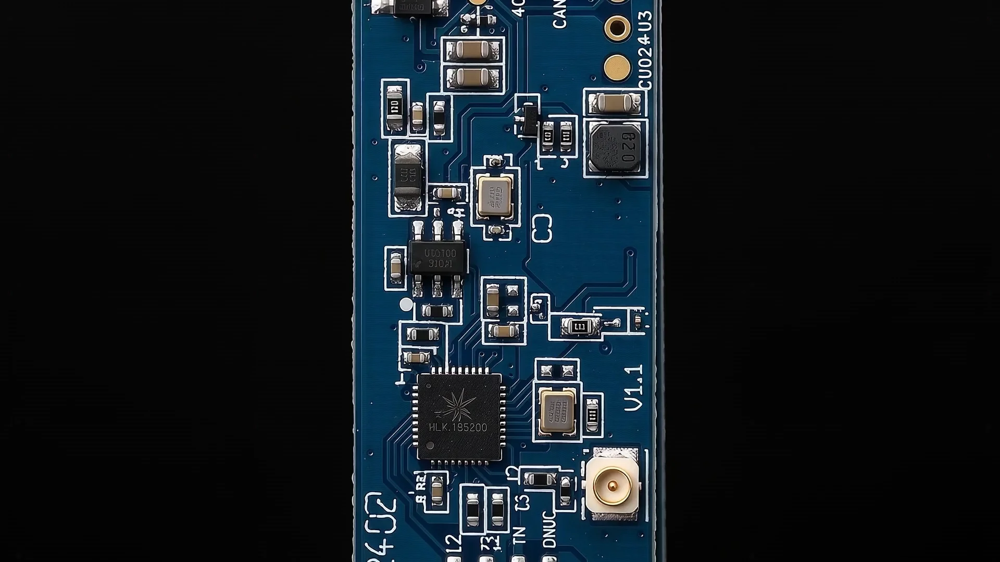
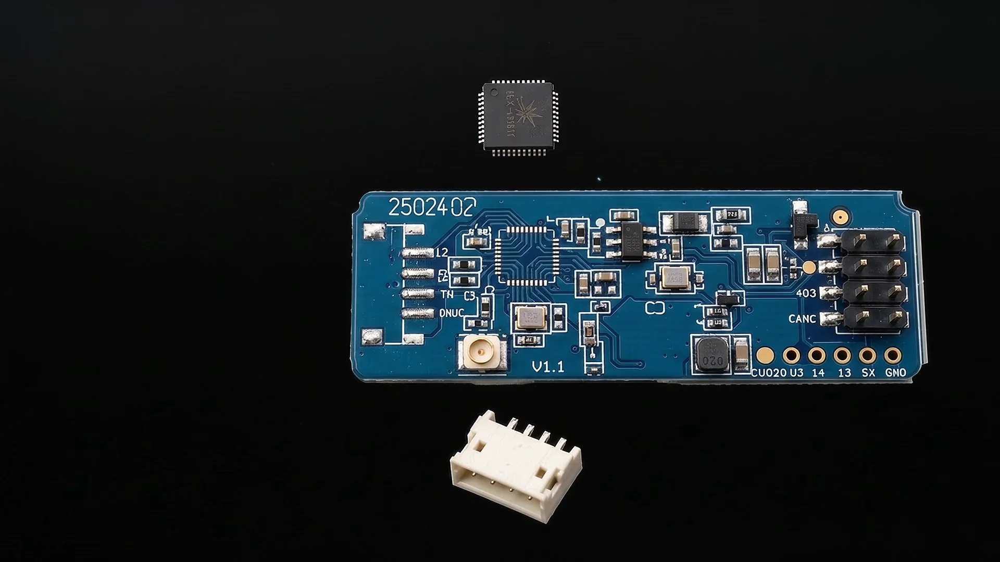

Módulo sensor
LD2450
Conector de pines
Módulo sensor
LD2450

Chip de radar
Genera la señal de radiofrecuencia de 24 GHz que la antena del módulo emite para detectar movimiento.
Conector de pines
TX y RX comunican datos por puerto serie. 5 V y GND alimentan el módulo.
